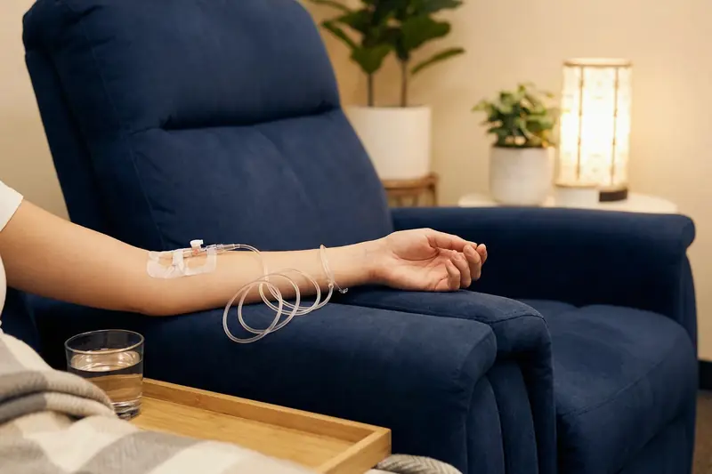

NAD+ Therapy in Brisbane: What It Is, and What an Infusion Is Like
NAD+ is a coenzyme found in every cell, studied for its role in cellular energy and ageing. Here is what an IV NAD+ infusion at our Brisbane clinic involves, and where the human evidence currently stands.

NAD+ (nicotinamide adenine dinucleotide) is a coenzyme found in every living cell. It has a central role in two of the body's most fundamental processes: energy metabolism and DNA repair.
In energy metabolism, NAD+ acts as an electron carrier in the mitochondrial respiratory chain, the process cells use to convert nutrients into ATP, the body's main energy currency. Without enough NAD+, that process becomes less efficient.
DNA repair uses it up. Enzymes called sirtuins and PARPs, which detect and repair DNA damage, consume NAD+ as they work. As NAD+ levels fall, repair becomes less efficient, and this is thought to contribute to cellular ageing.
Why levels fall with age
NAD+ levels in human tissue decline by approximately 50% between the ages of 40 and 60, and there are several reasons. The body becomes less able to make NAD+ from dietary precursors (tryptophan, niacin and nicotinamide riboside). Chronic inflammation, DNA damage and metabolic stress all increase the demand for NAD+, depleting the available stores. Lifestyle speeds this up: alcohol, poor sleep, sedentary behaviour and a diet low in NAD+ precursors all accelerate depletion.
How good is the evidence?
The theory is that falling NAD+ leaves cells progressively short of energy, and that this contributes to fatigue, cognitive decline, reduced physical capacity and muscle mass, and impaired immune function. Interest in NAD+ has grown over the past decade, driven largely by research at institutions including Harvard Medical School, the Salk Institute and the National Institute on Aging. Much of that work is on how cells produce energy and how they age. In people, the clinical evidence is still developing.
NAD+ infusion therapy is not intended to diagnose, treat, cure or prevent any disease or medical condition. A thorough medical assessment is required before any NAD+ program is prescribed, and each program is individually assessed and prescribed by one of our registered medical practitioners. Sometimes the answer is no. Where treatment does go ahead, individual responses vary, and results depend on your baseline health status, your lifestyle and the number of infusions you receive.
Why IV rather than oral supplements?
You may already take an oral NAD+ precursor such as nicotinamide riboside (NR) or nicotinamide mononucleotide (NMN). These are widely available as supplements, and they do raise NAD+ levels in the body.
An infusion delivers NAD+ directly into the bloodstream, bypassing the digestive tract. It achieves significantly higher peak plasma NAD+ concentrations than oral supplementation, which may be important for therapeutic use, and it allows a precise, high dose that is difficult to achieve reliably by mouth. Individual responses vary and are not guaranteed.
What happens during an infusion
A typical NAD+ infusion at the clinic takes between 2 and 4 hours, depending on the dose prescribed. It is given slowly on purpose, to minimise the side effects that can occur with rapid delivery.
Even so, some people experience transient chest tightness, nausea, flushing or a feeling of restlessness during the infusion. These effects are dose-dependent and are managed by adjusting the infusion rate. They tend to settle quickly once the rate is slowed and, in that setting, are not usually a sign of a serious adverse reaction. Every infusion is prescribed and supervised by our registered medical practitioners.
Most people find it comfortable and use the time to read or work, though individual responses vary.
How many infusions?
The right protocol varies between individuals. Your doctor bases it on your health goals and baseline status, then adjusts it according to how you respond. For someone new to NAD+ therapy who is suitable for it, the usual recommendation is an initial course of 2 to 4 infusions over 2 to 4 weeks, aimed at replenishing NAD+ in the cells. Maintenance infusions, typically monthly or quarterly, are then used with the aim of sustaining NAD+ levels over time.
Written by the clinic's medical team. This article is general information only and does not replace individual medical advice. A consultation does not guarantee that any particular investigation, medicine or service will be appropriate for you.